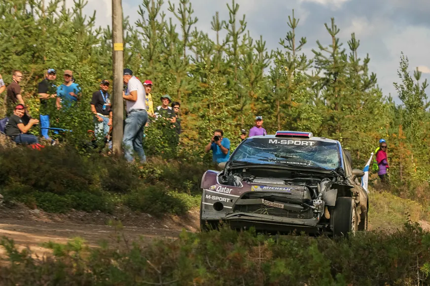
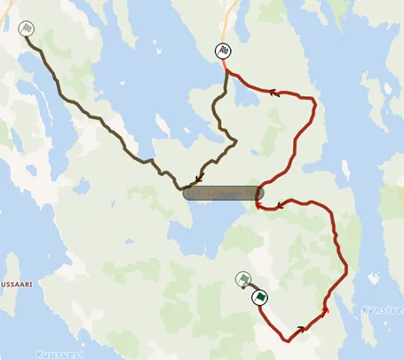
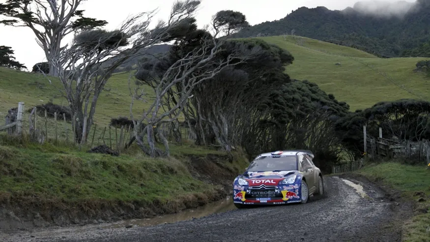
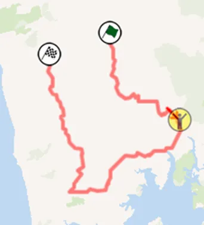
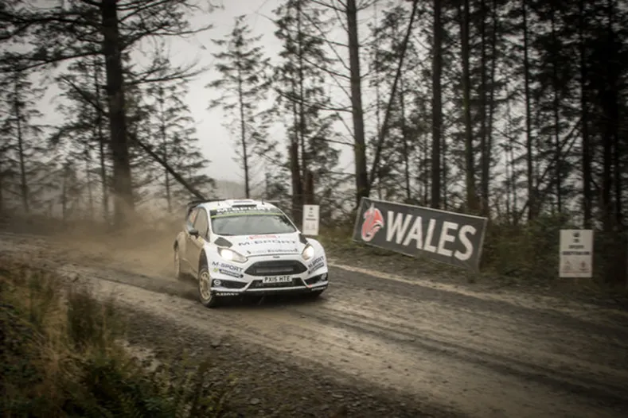
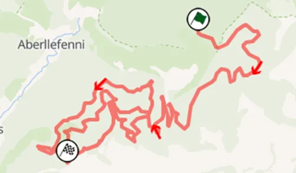
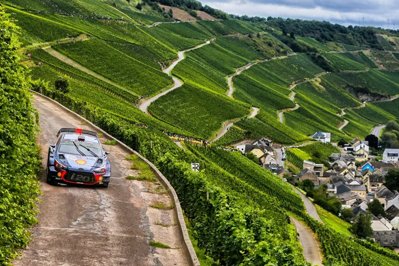
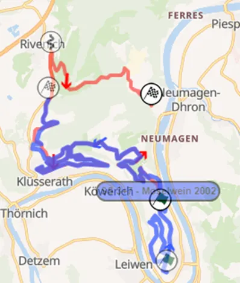
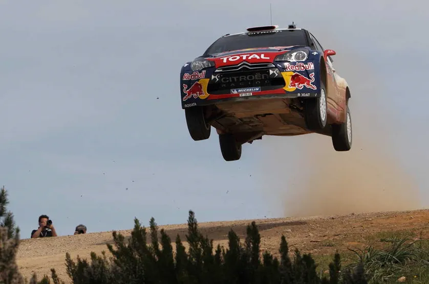
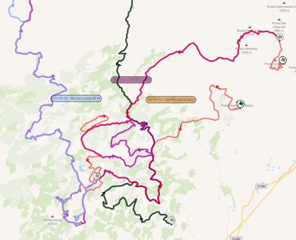

Top 30 Stages in WRC History: 21-25
The poll is closed, and the results are ready to be announced!
We asked you for your favorite WRC stages and you had your say. Each voter selected 15 stages out of a pool of 100, and the 30 stages that had the most votes, combined with our experts’ ratings made it to our list. This was a collaboration between us and Antti from itgetsfasternow.com, this list wouldn’t have been possible without him, so please go check his blog. He will have his own unique post based on this list when all the stages are revealed.
Throughout this month we’ll be going through the results, you saw the first 5, now let's round off the top 20:
25 – Lankamaa – Rally Finland

Lankamaa is the first Finland stage of the list! Lankamaa first appeared in a 1000 Lakes Rally itinerary back in 1988, and since then it has featured regularly. It is considered one of the most technical stages in Rally Finland and has seen many people end their rallies there. There aren’t many ditches, but there are many stuff to hit on the side of the road, maybe that’s why so many people retire here! In 2023 Lankamaa was the fastest stage of the rally, with an average of 143 km/h! This stage is also considered Kankkunen’s home stage, as the big Finn grew up on a farm near the stage. If you want to learn more about the history of Lankamaa, you can check this blog post by Antti
Onboard of the 2023 version of Lankamaa
Famous moments of this stage include both M-Sport Pumas retiring on the first pass of Lankamaa this year, Petter Solberg crashing out in 2000 , Mikko Hirvonen hitting a tree in 2011, Colin McRae rolling his Subaru Legacy in 1992, Kankkunen rolling from the early lead in 1994 and Kankkunen again suffering an engine failure from the lead in 1988.

In red you can see the the Lankamaa stage used in 2023, and in brown the longer version used in the past between 2022 and 1994 (with minimal changes).
24 – Te Akau South – Rally New Zealand

Te Akau South is a stage that’s synonymous with Rally New Zealand. It was voted
in 6th place at the best New Zealand stages in 2021 along with its “sister stage” Te Akau
North. Te Akau South is fast with a very nice flow, just like the
majority of New Zealand stages. The stage features a lot of camber as well as
many elevation changes as it goes up and down many hills on the coast.
Onboard of the stage
Famous moments include Latvala going out of the rally win contention in 2012, Chris Atkinson retiring from the rally in 2006, Marcus Gronholm going 28 seconds faster than everyone in 2002, and Alister McRae getting a rare stage win for Hyundai in 2000.

Map of Te Akau South, the reverse of this has also been used in 2003.
23 – Dyfi – Wales Rally GB

Our first Wales stage! Dyfi is an RAC classic, first featuring in 1961 as Dovey! (which is how the stage is actually pronounced). The stage is quite narrow at parts, but generally using wide-ish roads and is also quite fast and smooth. Dyfi has a nice flow with a series of hairpins and medium-speed corners, as well as many fast sections
Onboard of the shorter 2011 Dyfi stage
Famous moments include Andreas Mikkelsen crashing in 2014 and losing 2 mins, Robert Kubica crashing in 2013 on his WRC debut, Colin McRae going 10 seconds faster than everyone in 1997 and McRae going 24 seconds faster than everyone in 1994, as well as Carlos Sainz going off and retiring from 2nd.

Map of Dyfi, a shorter version was also used in 2011.
22 – Mittelmosel – Rallye Deutschland

Mittelmosel makes the list representing the vineyard stages from Rallye Deutschland. Also ran in the past as Moselwein, it’s a stage that has featured in pretty much all of the rallies Germany has hosted in the region. Mittelmosel goes through the fast but narrow roads that connect the vineyards, with many hairpins and 900 corners as well as many fast but technical sections.
Onboard of the stage
Famous moments include Tanak getting the lead from Ogier in 2018, Mikko Hirvonen suffering a transmission failure in 2010, Marcus Gronholm having an incident with a cow while under pressure from Francois Duval in 2007 that cost him 2nd and Sebastien Loeb going 10 seconds faster than everyone in 2002 en route to his first WRC win.

The routes of Mittelmosel and Moselwein. Moselwein was ran from 2002 to 2011, and Mittelmosel was ran from 2011 to 2019.
21 – Monte Lerno – Rallye D’Italia Sardegna

Monte Lerno has had its fair share of different layouts through the years, with its claim to fame being the famous Micky’s Jump. Parts of Monte Lerno have featured in all of the versions of Rally Sardegna in the WRC. It’s a very tricky and technical rough gravel stage, but depending on the layout it uses, it can also be one of the fastest of the rally! This Sardegna stage was also ran as a 49,9km stage this season, the longest of 2023. But it’s not even the longest it has ever been ran in, as its 2014 version was 59km long!
Onboard of the monster 59,9km version of this stage
Famous moments include Dani Sordo’s off on the first pass in 2023, Adrien Fourmaux’s crash in 2022, Chris Atkinson’s massive jump in 2006, Sebastien Loeb going 20 seconds faster than everyone in 2005 and Jari-Matti Latvala hitting a rock and losing 3rd in 2014.

The many layouts of Monte Lerno
Written by Dimitris Theodorou in collaboration with Antti from itgetsfasternow.com
All pics are from the Red Bull Content Pool


Comments